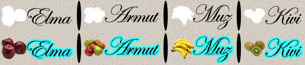
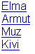
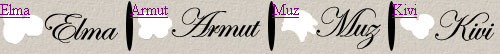
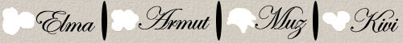
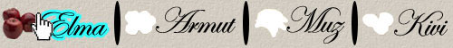

"Arkaplan Resmi kaydırmaca" ile Resimli Menüler
Arkaplan Resmi kaydırmaca tanımlamasını cemsid'den aldım. CSS ile menü yapımı serimize devam ediyoruz. CSS ile yapılan bir çok menü örneği mevcut biz burada bunları katagorize edip her bir katagoriye bir örnek yaparak mantığını anlatmaya çalıyoruz, mantığını anladıktan sonra CSS ile yapılan tüm menüleri yapabileceğimize inanıyorum.
CSS menülerinin vazgeçilmezi sırasız listeleri(\<ul>) kullanarak her bir linkin iki resimi bulunan(bir normal hali, diğeri fare imlecinin üzerine gelince görünecek resim) menü oluşturacağız.
Bu menü sayfa yüklenmeden yüklendiği için javascript ile yapılan rollover menülerden avantajlıdır ve Internet Explorer'da Temporary Internet Files > Settings > 'Every visit to page.' seçeneği seçili olan kullanıcılar için biçilmiş kaftandır. Ayrıca CSS ile yapılan menülerdeki avantajlara(kolay ekleme ve düzenleme, esnek yapı vb.) sahiptir tabi ki.
Bu metod cemsid'inde açıkladığı gibi arkaplan resmi(background-image) kaydırarak yapılıyor. Genelde bu tip menüler resim içeren veya anti-aliased metinlerin kullanıldığı durumlarda kullanılır.
[sourcecode language='html']
[/sourcecode]
Görüldüğü gibi diğer menü başlangıcından farkı olmayan-bir ek hariç- bir kodlama. Hariç olan ek her menu elemanına bir id atamamız. Çünkü her menü elemanı için bir resim tanımlaması yapacağız. Manav dükkanı açıyoruz :)
şžimdi menümüzü oluşturan resimi hazırlamaya geldi sıra. Menü resmini oluştururken bir normal halini ve hemen altına fare imleci üzerine geldiğindeki halini koyup resmi kaydedeceğiz. Bu işlem için Photosohop, Firefowrk, PaintShopPro vb. programlar kullanabilrisiniz.

Menüdeki margin, padding ve imgeleri kaldıralım. Boyutlarını ve konumunu tanımlayalım:
[sourcecode language='css'] ul#menu { height: 54px; width: 500px; margin: 0; padding: 0; position: relative; } [/sourcecode]

Menümüzü yatay olarak sıralamak için
[sourcecode language='css'] ul#menu li { list-style: none; position: absolute; } [/sourcecode]
Menü elemanlarının yükseklikleri sabit olduğu için hepsine ortak tanımlama yapıyoruz, hepsini kendine has kapsama alanı olması için blokladık(display:block) ve konumlandırdık(postion:relative).
[sourcecode language='css'] ul#menu li a { height: 54px; display: block; position:relative; } [/sourcecode]
Her menü elemanı için kendi genişliği ve arkaplan resmindeki(menu.jpg) yerini belirleyelim.
[sourcecode language='css'] #elma a{ width:130px; background: url(images/menu.jpg) 0 0 no-repeat; } #armut a{ width:142px; background: url(images/menu.jpg) -130px 0 no-repeat; } #muz a{ width:120px; background: url(images/menu.jpg) -272px 0 no-repeat; } #kivi a{ width:108px; background: url(images/menu.jpg) -392px 0 no-repeat; } [/sourcecode]
ve tüm menü elementlerinin soldan konumu belirleyelim.
[sourcecode language='css'] #elma {left: 0px;} #armut {left: 130px;} #muz {left: 272px;} #kivi {left: 392px;} [/sourcecode]

Resimler üzerindeki metinleri kaldırmak için
[sourcecode language='css'] ul#menu li a { text-indent: -9999px; text-decoration: none; } [/sourcecode]

Menümüz tamam. şžimdi de rollover efekti vermek için a:hover arkaplan resimlerinin konumunu belirleyelim. Konumunu yazarken sadece yükseliği üstten konumu değiştirdiğimize dikkat edin.
[sourcecode language='css'] #elma a:hover{ width:130px; background: url(images/menu.jpg) 0 -54px no-repeat; } #armut a:hover{ width:142px; background: url(images/menu.jpg) -130px -54px no-repeat; } #muz a:hover{ width:120px; background: url(images/menu.jpg) -272px -54px no-repeat; } #kivi a:hover{ width:108px; background: url(images/menu.jpg) -392px -54px no-repeat; } [/sourcecode]

Son olarakta bir bölümde olduğunda o bölümün aktif görünmesini sağlamak için, genel de bunu için a:hover durumu normal durum olarak tanımlanır. Bizde öyle yapalım. Mesela Muz bölümünde olduğumuzu farz edelim.
[sourcecode language='html']
[/sourcecode] [sourcecode language='css'] #elma a.secili{ width:130px; background: url(images/menu.jpg) 0 -54px no-repeat; } #armut a.secili{ width:142px; background: url(images/menu.jpg) -130px -54px no-repeat; } #muz a.secili{ width:120px; background: url(images/menu.jpg) -272px -54px no-repeat; } #kivi a.secili{ width:108px; background: url(images/menu.jpg) -392px -54px no-repeat; } [/sourcecode]
Örnek kodları indirmek için tıklayınız.
Comments !